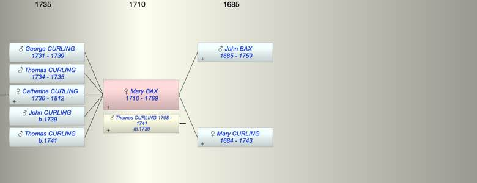

| [Index] |
| Mary BAX (1710 - 1769) |
|  |
| b. 21 Feb 1710 at Ramsgate |
| m. 08 Dec 1730 Thomas CURLING (1708 - 1741) at St Clement, Sandwich |
| d. 05 Jul 1769 aged 59 |
| Parents: |
| John BAX (1685 - 1759) |
| Mary CURLING (1684 - 1743) |
| Children (5): |
| George CURLING (1731 - 1739) |
| Thomas CURLING (1734 - 1735) |
| Catherine CURLING (1736 - 1812) |
| John CURLING (1739 - ) |
| Thomas CURLING (1741 - ) |
| Grandchildren (3): |
| Mary HOOPER (1763 - 1800), Anthony HOOPER (1764 - ), Thomas Abbott HOOPER (1765 - 1829) |
| Events in Mary BAX (1710 - 1769)'s life | |||||
| Date | Age | Event | Place | Notes | Src |
| 21 Feb 1710 | Mary BAX was born | Ramsgate | Note 1 | ||
| 08 Dec 1730 | 20 | Married Thomas CURLING (aged 22) | St Clement, Sandwich | Note 2 | |
| 1731 | 21 | Birth of son George CURLING | St Laurence | Note 3 | |
| 1734 | 24 | Birth of son Thomas CURLING | St Laurence | Note 4 | |
| 1735 | 25 | Death of son Thomas CURLING (aged 1) | St Laurence | Note 5 | |
| 1736 | 26 | Birth of daughter Catherine CURLING | St Laurence | Note 6 | |
| 1739 | 29 | Birth of son John CURLING | St Laurence | Note 7 | |
| 1739 | 29 | Death of son George CURLING (aged 8) | St Laurence | Note 8 | |
| 1741 | 31 | Birth of son Thomas CURLING | St Laurence | Note 9 | |
| 1741 | 31 | Death of husband Thomas CURLING (aged 33) | |||
| 14 Jun 1743 | 33 | Death of mother Mary CURLING (aged 59) | died aged 58 ex Ash Church MI | ||
| 11 Jul 1759 | 49 | Death of father John BAX (aged 74) | aged 77 ex MI from Ash Church | ||
| 05 Jul 1769 | 59 | Mary BAX died | Note 10 | ||
| Death of son Thomas CURLING | Note 11 | ||||
| Personal Notes: |
|
Mary (née Bax) Curling – Will Summary PROB11/950
Made 16 Sep 1767 proved 29 Aug 1769 • Mary Curling of Ramsgate, parish of St Laurence in the Isle of Thanet, widow • Daughter Catherine now the wife of Anthony Hooper or her issue if she doesn’t survive Mary, £250 and all her wearing apparel and diamond ring • Son George and daughter Catherine Hooper £100 in trust to be invested and the interest to be put into the hands of Son Thomas and no other person whatever or howsoever empowered and authorized by him if Elinor his wife is still living when Mary dies. If Elinor is not living then this part of the will to be null and void and, instead, Thomas to inherit a full third share of her estate. • Executors to buy a suit of mourning clothes for Thomas or for his issue if he has died by the time of Mary’s decease. • If Thomas dies without issue, son George to take his part of the inheritance. • If Thomas dies and Elinor survives with issue, the interest of the above £100 to be shared equally between the children for their maintenance or education. When the youngest reaches the age of 21, the £100 to be shared equally between them. If such issue die then the £100 to be shared equally between the executors or their i ssue. • Residue to Son George Curling and daughter Catherine Hooper and their issue, shared equally with the exception of five House..ne and /copper to stay in Mary’s house for Thomas who is to live there. • George Curling and Catherine Hooper to be executors • If Elinor dies, Thomas is to have one full third part of all the residue and is to be a joint executor Witnesses Joseph Norwood and Ann Foster Catherine wife of Anthony Hooper mariner of Ramsgate, |
| Created on a Mac™ using iFamily for Mac™ on 8 Oct 2023 |